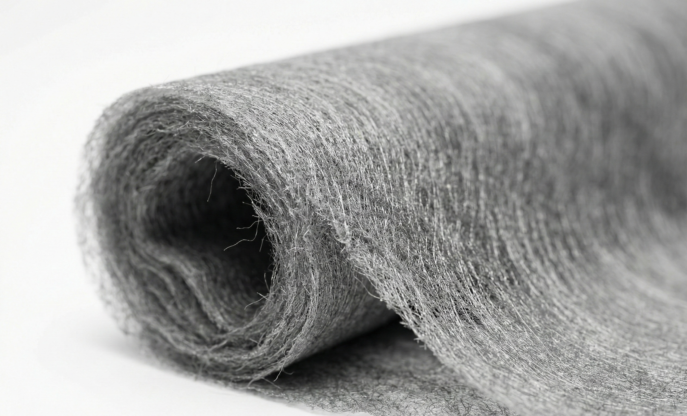
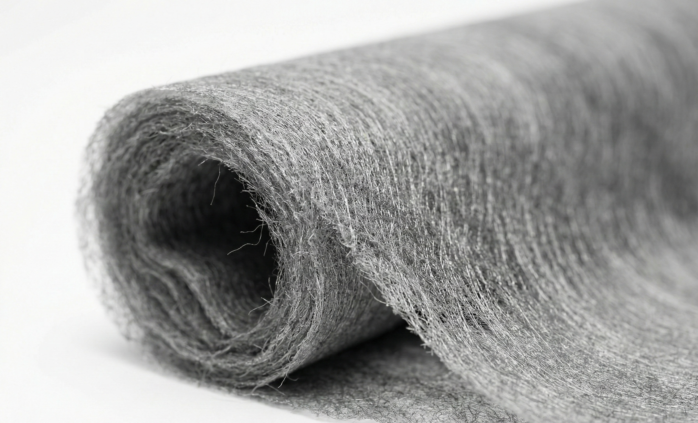

標準化された機能性テキスタイルプラットフォーム。重量を増やすことなく、保温性と熱安定性を高めるよう設計されています。
HTXの保温・熱快適性マテリアルは、材料レベルで定義された標準化された機能性テキスタイルプラットフォームです。かさばる断熱材や重い構造層に頼ることなく、着用時の熱的快適性を高めるよう設計されています。
チタン合金ベースの表面機能アーキテクチャを通じて、これらの材料は日常の着用や低活動条件下での不要な熱損失を減らし、全体的な快適性と熱安定性を維持します。このマテリアルプラットフォームは、衣服のシルエット、外観、またはパターン構造を変更することなく、既存の生地デザインにシームレスに統合されます。
最終的な衣服のデザインと適用方法は、下流のパートナーによって定義されます。

HTXの保温・熱快適性マテリアルは、材料表面レベルで機能挙動が定義された標準化マテリアル・プラットフォームとして提供されます。
製造はHTXの社内ライン、または管理されたプロセス条件下にある認定製造パートナーを通じて行われます。追加の設備や構造変更を必要とせず、既存のアパレル製造ワークフローに直接統合できるように設計されています。
このマテリアル・プラットフォームは、空気の流れを遮断したり、衣服の厚みを増したりするようには設計されていません。その代わり、表面レベルの熱挙動を管理することで熱安定性をサポートし、より暖かく軽量な着用体験に貢献します。
これにより、衣服はアクティブな状態でも静止した状態でも快適なままであり、長時間の着用、休息、リカバリーのシナリオに適しています。
 

試験方法： JIS L 1926 (2019)
制御された光照射下において、Air-Coated処理されたバリエーションは、未処理の対照材料と比較して高い温度上昇を示しました。
| バリエーション | 温度上昇 (ΔT) |
|---|---|
| Ti + Al (Air-Coated) | 9.4°C |
| Ti (Air-Coated) | 8.7°C |
| 未処理コントロール | 6.2°C |
HTX-22 は、熱快適性用途向けに設計されたチタン合金ベースの機能性表面アーキテクチャを表します。
保温およびリカバリー指向のマテリアル・プラットフォーム向けに、HTXは下流工程での一貫したコミュニケーションを支援する、オプションの材料識別ツールを提供しています。
この識別タグは、ブランディングや認証として機能するものではありません。これはあくまで材料リファレンスとして機能し、ブランドが独自のプロセス詳細を開示することなく、材料レベルの機能を説明できるようにするためのものです。
お客様の特定の用途に対する材料の適合性を評価するための議論を歓迎します。
HTXマテリアルチームへ連絡可能であれば、以下をお知らせください：